Classes, Roster and coach Home
Your six calls are locked in: practice rounds out of averages, no Captain tag, a plain Injured chip, nothing on Classes without a source, one green on Home, and no "Needs a look" strip on desktop.
Your six calls are locked in: practice rounds out of averages, no Captain tag, a plain Injured chip, nothing on Classes without a source, one green on Home, and no "Needs a look" strip on desktop.
Every stat is back on the summary, including scrambling and greens in regulation, and the strokes gained bars are fixed. All 201 figures are mapped to where the app really gets them, and Home's bar and hero are one green.
Signed off, with all 34 states linked and an animation check that passes all 11 cases. The build contract is written: every screen and state, its exact sizes, all 33 animations and 171 pass or fail checks. Nothing new is collected. Pin sync is its own held PR with one database change.
Where the team gives back strokes, drawn as a hole you tap spot by spot, with up to 4 open reads per player. A fifth Course tab holds course reads and the team's scoring history by week and by course, against Tour. Desktop ends level at every size, and every word and figure matches what the app really has. The build contract is written: every screen and state, its exact sizes, all 41 animations and about 170 checks.
One read in full: what is off, where it shows up, why CoachHelm thinks so and how sure, then what to do. Every subscreen, sheet and state is live on the design, and the package now lists all 43 screens with exact sizes, 26 motion rows and pass/fail checks per PR.
One file per player, seen the coach's way or the player's. Players compare only against the team average and the PGA Tour, and get a field card only when 5 or more played, so no teammate's score can be worked out. The build contract is written: every screen, its sizes, 28 animations and pass or fail checks. Its first PR fixes a live leak of a player's private goals.
The Helm key in the green bar pours out the Glass panel you picked. A task shows its steps, asks when your words leave a gap, draws the real thing with every value it will write, and only then writes. Undo is a real 8 seconds: nothing is saved or sent and nobody is told until it closes.
Ask works like Claude: steps you can watch, real golf visuals with their sources, plans in a side pane you save to a folder, and one flow that creates things in every tab. Nothing is written until you press, and Undo lasts 8 seconds before anyone is told.
CoachHelm builds a practice plan from Ask and in the builder, asks first, shows a picture for each read and writes every block with a Why. Players get only their group's part. Package: design-refresh/practice-plan/.
Already shipped, so it's documented and left for after the redesigns. The flat page in PR 2 removes the gradient behind every screen; 34 other screens follow by area.
One design language across all of them, so a build in one section looks like it belongs next to the others.
Left is the phone today, right is the approved design, both in light mode. Dark mode, few-round and no-round states and the largest Text Size are in the design folder too.
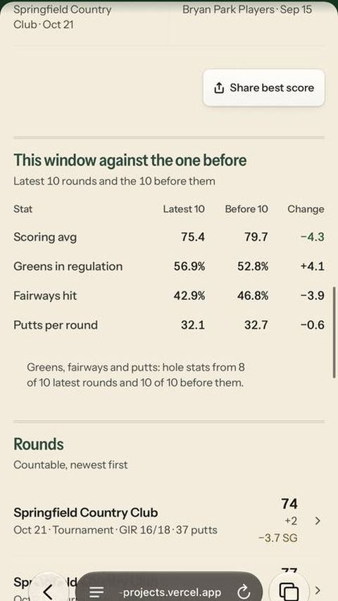
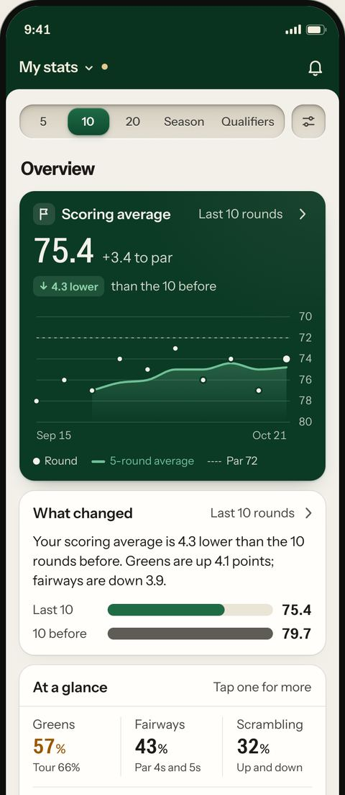
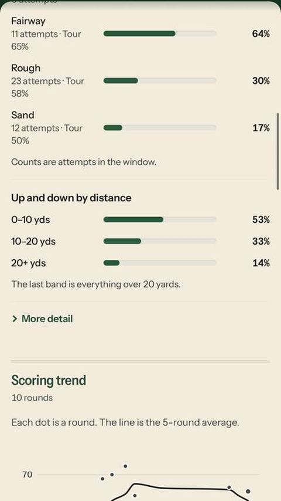
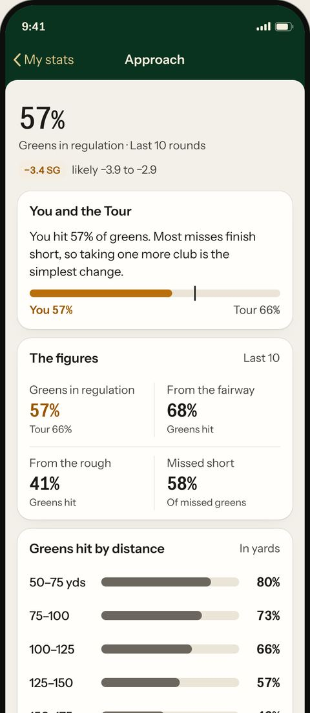
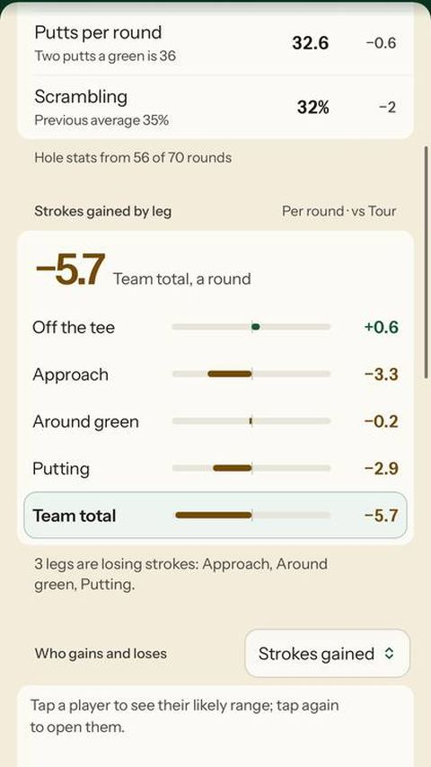
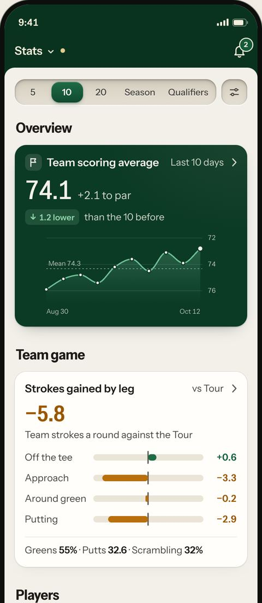
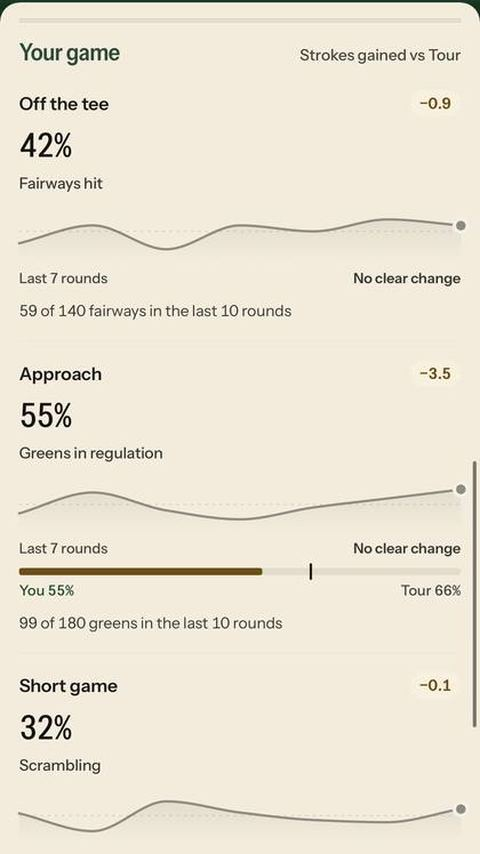
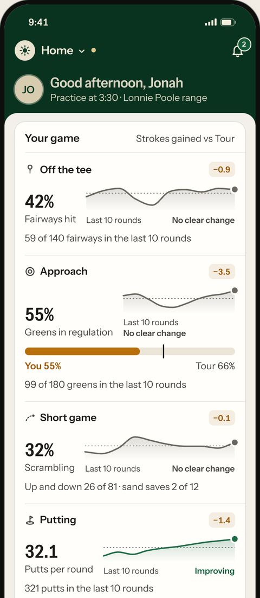
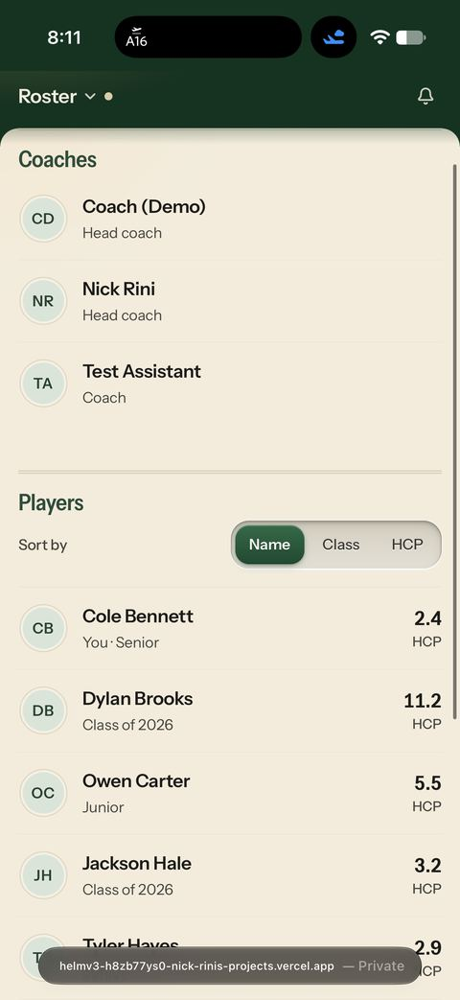
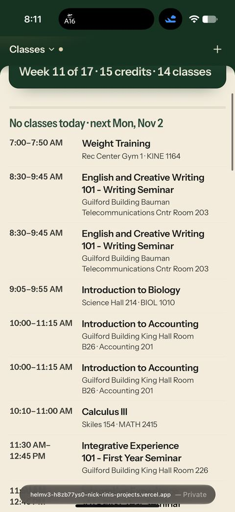
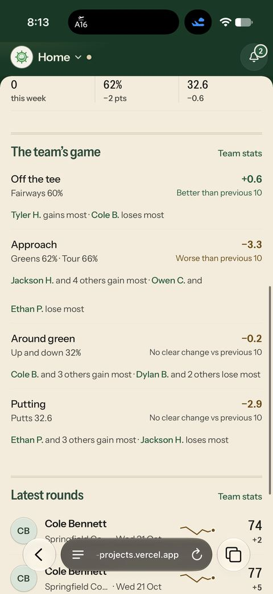
Screenshots of these three designs come from the capture script on your Mac, the first step of the build. The design page shows every state, sub page and motion now.
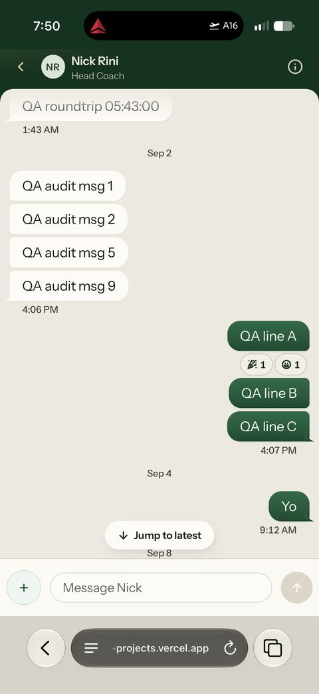
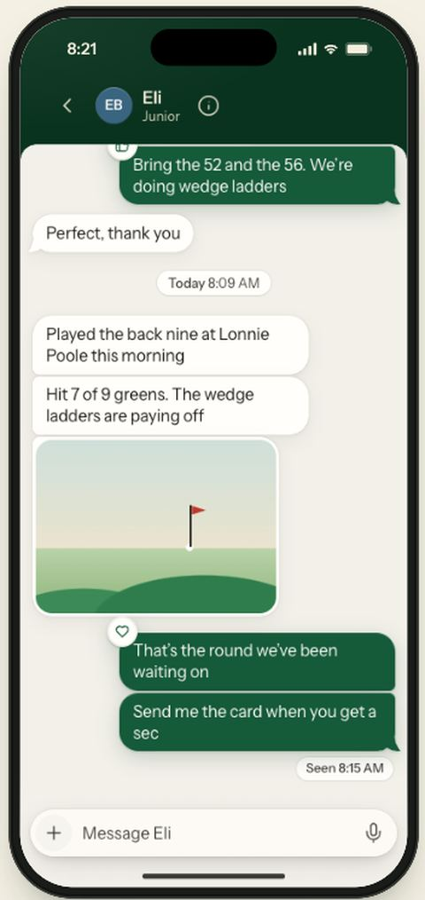
The design page has every state live: inbox, polls, holds and reactions, Seen by, details, mute and the empty inbox, plus a motion lab with Replay on each animation.
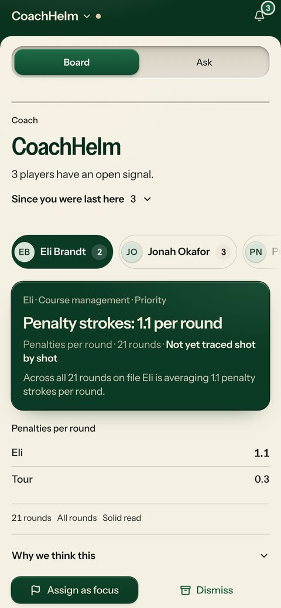
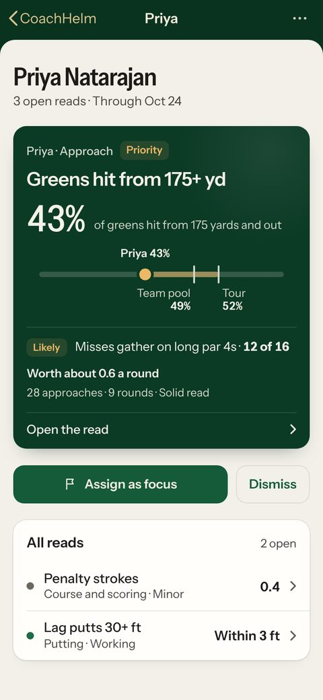
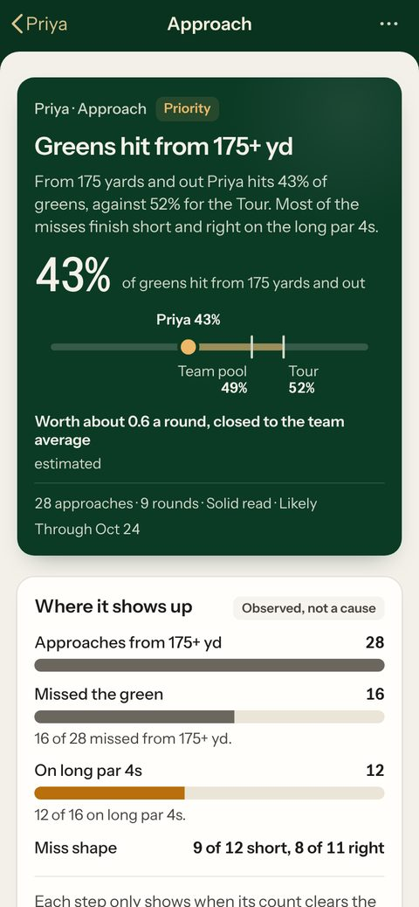
The design page has phone and desktop, coach and player, all three reads and every state a read can be in, including the More sheet, the answer row, Assigning, Dismissed and the error pages. Each one has its own link.
Draft pull requests, one at a time. Nothing deploys, no flags flip, and shot tracking keeps collecting exactly what it does today.
| PR | What it changes | State |
|---|---|---|
| 1 | Shared colour, type and spacing tokens | Ready |
| 2 | Flat page under the green bar; section titles move into their cards | Ready |
| 3 | Large titles and sticky controls under the bar, bar itself untouched | Ready |
| 4a | Stats groundwork, with no visible change except the "Missed short" fix | Ready |
| 4b | My stats on phone: summary cards that push their detail pages | Ready |
| 4c | Detail page polish: panel order, chart drag, charts that grow once | Ready |
| 5 | Team stats on phone, same pattern | Ready |
| 6 | Player Home, Your game as one card | Ready |
| 7 | Year-coloured avatars, and the "Class of 2031 · Class of 2031" label fix | Ready |
| 8 | Roster, coach and player, phone and desktop | Ready |
| 9 | Classes on phone | Ready |
| 10 | Coach Home on phone, one green bar and hero | Ready |
| 11a to 11h | Messages in eight steps: groundwork, inbox, thread and bubbles, composer and send, hold and reactions and polls, details and mute, the motion tests, then pin sync (held) | Ready |
| CT0a–7 | CoachHelm Team behind its own switch, off: count only reads that are drawn, a read-only team loader, then the hole, the spot card, sheets, stories, the huddle, roster and track record, and motion | Ready |
| CR0–6 | CoachHelm read behind its own switch, off: first a fix so players never see a likely cause today, then the plumbing, phone cards, desktop, the summary card for the Board, motion and states, and tests | Ready |
| L0–6 | CoachHelm Lenses behind its own switch, off: first a fix so the coach's Deep dive never shows a player's private goals, then one file per player with the coach and player lens | Ready |
| AK0–12 | CoachHelm Ask behind its own switch, off: plumbing, the answer card and live steps, read chips, visuals, confirm and Undo, artifacts, the new reads, tone, the practice brief and folders, player Ask and its weekly allowance, the create flows, then the side-by-side and motion tests | Ready · five held database changes, none run |
| QC0–6 | CoachHelm quick chat behind its own switch, off: plumbing and the new pour spring, the Helm key, the Glass panel, steps and questions, task cards with the held Undo and receipts, the live pill, then the side-by-side and motion tests | Ready · Undo waits on one held database change |
| PP0–9 | CoachHelm practice plans behind its own switch, off: the printed sheet and fixtures, read steps and pictures, the ask-first card, the plan card and refine, save to a folder, publish with Undo, print and PDF, plan format, the builder helper, then the player side | Ready for build review (prep only) · PP4, PP5, PP8 and PP9 wait on the Practice tab |
| 12 | Motion and Reduce Motion pass across all of it | Ready, runs last |
All three settled. You said "Keep as drawn" on 31 Oct; the other two are built as yes.
| The call | Built as | |
|---|---|---|
| 1 | Keep the Stats page head as drawn, with "Overview" and the other section names on the page, or use the large title every other section has | Settled As drawn |
| 2 | Let detail pages run longer than drawn so nothing from today is removed | Yes |
| 3 | Read Home's trend over 10 rounds instead of 7, so "Improving" and "Slipping" can actually show | Yes |
All five are settled.
| The call | Where it stands | |
|---|---|---|
| 1 | Announcement in the + menu | Settled Left out |
| 2 | Typing dots on inbox rows and pins, and the typer's name in groups | Settled Built, no database change |
| 3 | Three animations with a little more bounce than the app's usual limit | Settled Kept, checked for smoothness |
| 4 | A Camera row in the + menu (Photos already opens the camera) | Settled Left out: Photos, File, Poll |
| 5 | Pins sync across your devices (needs a database change) | Settled Yes, as its own held PR 11h |
Settled 31 Oct. You picked 2 and 3; 1 is built as a default you can flip in one place.
| The call | Built as | |
|---|---|---|
| 1 | Open CoachHelm on the hole and call the tab Team instead of Board | Yes |
| 2 | A fifth tab, Course, beside the four spots: course, scoring and pressure reads (20 of 68 on staging), plus the team's to-par by week and by course and the team against Tour | Yes, your call |
| 3 | Every open read per player, up to 3 needs work and 1 working, instead of one | Yes, your call |
Built with my picks as defaults. Each one is a single switch in the build, so you can flip it any time.
| The call | Built as | |
|---|---|---|
| 1 | Bring pictures back into the read, each with its number written beside it | Yes |
| 2 | Players see where it shows up (counted, not a cause), but never a likely cause | Yes |
| 3 | The team pool beside the Tour on the ladder | Yes, while its switch is on |
You left these to me. Each is built as a default you can flip with one switch.
| The call | Built as | |
|---|---|---|
| 1 | Drop-down on phone too, instead of today's bottom sheet | Yes |
| 2 | How long Undo lasts before anything is saved or anyone is told | 8 seconds |
| 3 | Who gets the key | Coaches only |
| 4 | Close the panel mid-task and the key becomes a small live pill | Yes |
| 5 | Where a plan saves until Documents folders ship | Practice plans |
| 6 | Send a message from the card with your own press, under the same Undo | Yes |
You decided the first two. The rest you left to me; each is built as a default you can flip.
| The call | Built as | |
|---|---|---|
| 1 | Announcements post when you press Post, with Undo | Settled Yes, players told once Undo closes |
| 2 | What players compare themselves against | Settled PGA Tour and team averages only |
| 3 | A drill Ask saves would show in every team's bank | Drill flow off until the team bank change is applied |
| 4 | Setting a lineup and locking it | Set has Undo; Lock is its own card, with no Undo |
| 5 | A Lift flow | Waits until Lift has a team table |
| 6 | A player's Request more mail while customer email is off | Logged, no email |
Everything is in one zip, clubhouse-redesign-package.zip. Copy its design-refresh/ folder to the repo root and paste the prompt in CODE_PROMPT.md. The agent starts at START_HERE.md: the rules, one table of shared values, the build order with the two leak fixes first, and the loop that proves each PR matches its design side by side. Every lane has its screens, specs, motion and pass or fail checks, plus its design page, plan, data checks and capture script.
It keeps your laptop light: one dev server, one browser, at most two helpers at a time.
Updated 4 November. All nine lanes are complete and in the zip.